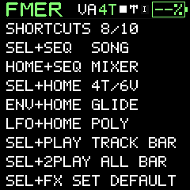
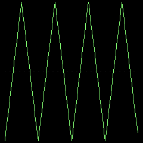

Reference
Global shortcuts and HOME mixer
Direct access to songs, performance and voice modes.
| Hold | Press | Result |
|---|---|---|
| SEL | SEQ | SONG, four tracks |
| HOME | SEQ | MIXER, four tracks |
| SEL | HOME | Toggle four tracks / four-voice synth |
| ENV | HOME | Single instrument, mono glide |
| LFO | HOME | Single instrument, four voices, glide off |
| SEL | FX | Save current FX routing as personal default |
Hold the modifier first. HOME, ENV and LFO ordinary taps activate on release so a shortcut does not accidentally page or toggle an LFO. Changing voice allocation releases current notes. Navigation between HOME, MIXER, SONG and FX while already in four-track mode preserves playback. The shortcuts also appear on GLO / SHORTCUTS directly after ICON LEGEND.
Four-track HOME shows four pre-fader/pre-FX PCM monitors and one final mix oscilloscope. Each knob controls its corresponding track. SEL, SELECT or ALGORITHM cycles only Volume, Mute, Solo and FX. M and S indicate mute and solo; FX indicates routing into the shared effects. A muted track can still show a quiet-colored waveform. Press HOME again to show only the four part scopes and the master scope. Press another page button to leave fullscreen. Normal synth HOME keeps the filter, resonance, reverb and delay controls.
Hold a section button to return home
Hold FX, SEQ, EDIT, GLO or LFO for0.8 seconds to return to that section's landing page. A hold does not toggle an effect or change your playing mode. SEQ returns to MIXER in4T and single-lane SONG in1V/4V; FX returns to Filter/Space, EDIT to its first engine page, GLO to Voice/Tempo and LFO to its first modulation page. Short LFO taps retain the existing on/off behavior. ARP remains its on/off gesture and ENV remains a single envelope page. Modifier shortcuts take priority over section holds.



